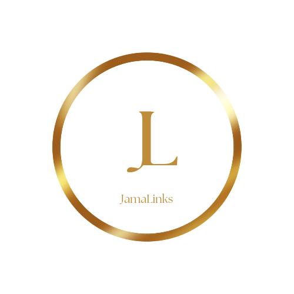

EducationaLinks
Stationery/ School Supplies
School can be an exciting time for most of us and for some, something we just want to get over with and out of (unfortunately). From a personal standpoint, when I look back to my school days, it really was an exciting time. I have heard it has been said, "school days are the best days." And for most of us, they truly are. So here are a list of school essentials for the new school year. Enjoy!
- Pencils
- text
- text
- text
- text
- Pens
- Ballpoint pens are reliable, versatile and robust, and are available for a very wide range of prices. They have replaced fountain pens as the most common tool for everyday writing. Click here to learn alot more about them including how they work.
- Gel pens works similarly to a ballpoint pen, in that it dispenses ink using a rolling ball held in the writing tip. However, unlike oil-based ballpoint pen ink, gel pen ink consists of a water-based ge that has a pigment suspended in it. Because the ink is thick and opaque, it shows up more clearly on dark or slick surfaces than the typical inks used in ballpoint or felt tip pens. Gel pens can be used for many types of writing and illustration. You can learn so much more about them here. And choose from the list I made below to help you find the one right for you
- text
- text
- text
- text
- Roller ball pens or roll pens are pens that dispenses a water-based ink through a ball tip similar to that of a ballpoint pen. The rollerball pen was initially designed to combine the convenience of a ballpoint pen with the smooth "wet ink" effect of a fountain pen. The details of how they work, their pros and cons and more is discussed here. But personally, I like the fact that less pressure has to be applied as you write and it writes neatly and quickly.
There are two types of rollerball pens used.
- Liquid ink pens
- Gel ink pens
- Felt-tip pens or marker, has a porous tip made of fibrous material, which normally remains saturated with ink from the reservoir. As ink leaves the tip, new ink is drawn from the reservoir - which often consists of a large volume of a similar porous material to that used in the tip - by capillary action and gravity. As with a fountain pen, ink leaves the tip of a felt tip pen by capillary action when writing on a porous surface.
- Brush pens or Fudepen writing tip consists of a small brush fed with ink from a liquid ink reservoir similar to those used in fountain pens and rollerball pens. Brush pens might be either refillable or disposable, and might use either water-based or waterproof ink. The most significant functional difference of brush pens from felt-tip pens is the far greater compliance of the tip.
- Stylus pen plural styli or styluses, is a writing utensil which does not use ink, but rather makes marks primarily by creating scratches or indentations in the writing surface. As such, the tip often consists simply of a sharp metal point. Such tools are also used for other types of marking than writing, and for shaping or carving in, for example, pottery. The word stylus also refers to a pen-shaped computer accessory that is used to achieve greater precision when using touchscreens than generally possible with a fingertip. There are products available that combine a ballpoint tip at one end and a touchscreen stylus at the other. Read more here.
- text text
- text text
- text
- text
- text
- text
- Erasers
- Pencil or cap erasers: Originally made from natural rubber, but now usually from cheaper SBR, this type contains mineral fillers and an abrasive such as pumice with a plasticizer such as vegetable oil.
- Artist's gum eraser: This kind of eraser is very soft yet retains its shape and is not mechanically plastic, but crumbles as it is used. It is especially suited to cleaning large areas without damaging the paper. However, they are so soft as to be imprecise in use.
- Vinyl erasers: High-quality plasticized vinyl or other "plastic" erasers, originally trademarked Mylar in the mid-20th century, are softer, non-abrasive, and erase cleaner than standard rubber erasers. This is because the removed graphite does not remain on the eraser as much as rubber erasers, but is instead absorbed into the discarded vinyl scraps. Being softer and non-abrasive, they are less likely to damage canvas or paper. Engineers favor this type of eraser for work on technical drawings due to their gentleness on paper with less smearing to surrounding areas.
- Elastomer erasers: In these types, a thermoplastic elastomer combines a styrene resin elastomer and an olefin resin. These erasers have better erasability for erasing pencil marks compared to conventional vinyl erasers. Elastomers can be formed into thin cylindrical or other shapes to be used as extendable erasers.
- Kneaded erasers: Kneaded erasers (called putty rubbers outside the United States) have a plastic consistency and are common to most artists' standard toolkit. They can be pulled into a point for erasing small areas and tight detail erasing, molded into a textured surface and used as a reverse stamp to give texture, or used in a "blotting" manner to lighten lines or shading without completely erasing them.
- Poster putty: Commonly sold in retail outlets with school supplies and home improvement products, this soft, malleable putty appears in many colors and under numerous brand names. Intended to adhere posters and prints to walls without damaging the underlying wall surface, poster putty works much the same as traditional kneaded erasers, but with a greater tack and in some circumstances, lifting strength.
- Electric erasees: The electric eraser was invented in 1932 by Albert J. Dremel of Racine, Wisconsin, United States.[12] It used a replaceable cylinder of eraser material held by a chuck driven on the axis of a motor. The speed of rotation allowed less pressure to be used, which minimized paper damage. Originally standard pencil-eraser rubber was used, later replaced by higher-performance vinyl. Dremel went on to develop an entire line of hand-held rotary power tools.
- Fiberglass erasers: A fiberglass eraser, a bundle of very fine glass fibers, can be used for erasing and other tasks requiring abrasion. Typically the eraser is a pen-shaped device with a replaceable insert with glass fibers, which wear down in use. The fibers are very hard; in addition to removing pencil and pen markings, such erasers are used for cleaning traces on electronic circuit boards to facilitate soldering, removing rust, and many other applications.
- Felt chalkboard erasers: Felt chalkboard erasers or blackboard dusters are used to erase chalk markings on a chalkboard. Chalk writing leaves light-colored particles weakly adhering to a dark surface (e.g., white on black, or yellow on green); it can be rubbed off with a soft material, such as a rag. Erasers for chalkboards are made, with a block of plastic or wood, much larger than an eraser for pen or pencil, with a layer of felt on one side.
- Ink eraser: An ink eraser is an instrument used to scrape away or chemically bleach ink from a writing surface. This is a more involved process than removing pencil markings.
- text
- text
- text
- text
- text
- Notebooks
- Paper The oldest known archaeological fragments of the immediate precursor to modern paper date to the 2nd century BCE in China. The pulp papermaking process is ascribed to Cai Lun, a 2nd-century CE Han court eunuch. It has been said that knowledge of papermaking was passed to the Islamic world after the Battle of Talas in 751 CE when two Chinese papermakers were captured as prisoners. Although the veracity of this story is uncertain, paper started to be made in Samarkand soon after.[3] In the 13th century, the knowledge and uses of paper spread from the Middle East to medieval Europe, where the first water-powered paper mills were built.[4] Because paper was introduced to the West through the city of Baghdad, it was first called bagdatikos.[5] In the 19th century, industrialization greatly reduced the cost of manufacturing paper. In 1844, the Canadian inventor Charles Fenerty and the German inventor Friedrich Gottlob Keller independently developed processes for pulping wood fibres. Read more here about the interesting story of paper.
- text
- text
- text
- text
- Markers
- text
- text
- text
- text
- Small Printers Thermal-transfer printing is a digital printing method in which material is applied to paper (or some other material) by melting a coating of ribbon so that it stays glued to the material on which the print is applied. It contrasts with direct thermal printing, where no ribbon is present in the process. Thermal transfer is preferred over direct thermal printing on surfaces that are heat-sensitive or when higher durability of printed matter (especially against heat) is desired. Thermal transfer is a popular print process particularly used for the printing of identification labels. It is the most widely used printing process in the world for the printing of high-quality barcodes. Printers like label makers can laminate the print for added durability. Read more here.
- text
- text
- text
- text
- Calculator
- text
- text
- text
- text
- Backpacks
- text
- text
- text
- text
- Clothing
- text
- text
- text
- text
According to this article on Wikipedia, at around 1560, an Italian couple named Simonio and Lyndiana Bernacotti made what are likely the first blueprints for the modern, wood-encased carpentry pencil. Their version was a flat, oval, more compact type of pencil. Their concept involved the hollowing out of a stick of juniper wood. Shortly thereafter, a superior technique was discovered: two wooden halves were carved, a graphite stick inserted, and the halves then glued together—essentially the same method in use to this day.
The videos below explain much of the process involved in the making of pencils.
Historically, the word pencil, from Old French pincel, from Latin penicillus a "little tail" originally referred to an artist's fine brush of camel hair, also used for writing before modern lead or chalk pencils.
Though the archetypal pencil was an artist's brush, the stylus, a thin metal stick used for scratching in papyrus or wax tablets, was used extensively by the Romans and for palm-leaf manuscripts.
Fast forwarding to this day, pencils create marks by physical abrasion, leaving a trail of solid core material that adheres to a sheet of paper or other surface. They are distinct from pens, which dispense liquid or gel ink onto the marked surface.
Most pencil cores are made of graphite powder mixed with a clay binder. Graphite pencils (traditionally known as "lead pencils") produce grey or black marks that are easily erased, but otherwise resistant to moisture, most chemicals, ultraviolet radiation and natural aging. Other types of pencil cores, such as those of charcoal, are mainly used for drawing and sketching. Coloured pencils are sometimes used by teachers or editors to correct submitted texts, but are typically regarded as art supplies, especially those with cores made from wax-based binders that tend to smear when erasers are applied to them. Grease pencils have a softer, oily core that can leave marks on smooth surfaces such as glass or porcelain.
The most common pencil casing is thin wood, usually hexagonal in section but sometimes cylindrical or triangular, permanently bonded to the core. Casings may be of other materials, such as plastic or paper. To use the pencil, the casing must be carved or peeled off to expose the working end of the core as a sharp point. Mechanical pencils have more elaborate casings which are not bonded to the core; instead, they support separate, mobile pigment cores that can be extended or retracted (usually through the casing's tip) as needed. These casings can be reloaded with new cores (usually graphite) as the previous ones are exhausted.
To read the full article and learn more about the pencil's history and other interesting facts you could click here.
"The pen is the lever that moves the world"
Thomas De Witt Talmage
"There is more done with pens than with swords."
Harriet Beecher Stowe
Yes, two appropariate quotations, out of many, to start off this section. The mighty pen. Lots have been written with them, and I'm pretty sure there is alot more to be written despite this technological. Tgere is also lots to say about them. In my reading I have come across a rich history of the pen. You can read it here and here also.
Nevertheless, for our own purposes let us start off with our various modern kinds of pens and then we shall jump into some rarer kinds used for calligraphy and art.
Modern Pens
Did you know that before rubber erasers used today, tablets of wax were used to erase lead or charcoal marks from paper. Bits of rough stone such as sandstone or pumice were used to remove small errors from parchment or papyrus documents written in ink. Crustless bread was used; a Meiji period (1868–1912) Tokyo student said: "Bread erasers were used in place of rubber erasers, and so they would give them to us with no restriction on amount. So we thought nothing of taking these and eating a firm part to at least slightly satisfy our hunger. "
A very interesting genesis story for the widely used eraser. If it interest you, you could read more about this wonderful piece of stationery here.
Types of erasers
Various notebooks are popular among students for taking notes. The types of notebooks used for school work are single line, double line, four line, square grid line etc. These notebooks are also used by students for school assignments (homeworks) and writing projects.
The earliest form of notebook was the wax tablet, which was used as a reusable and portable writing surface in classical antiquity and throughout the Middle Ages.[1] As paper became more readily available in European countries from the 11th century onwards, wax tablets gradually fell out of use, although they remained relatively common in England, which did not possess a commercially successful paper mill until the late 16th century.[1][2] While paper was cheaper than wax, its cost was sufficiently high to ensure the popularity of erasable notebooks, made of specially-treated paper that could be wiped clean and used again. These were commonly known as table-books, and are frequently referenced in Renaissance literature, most famously in Shakespeare's Hamlet: "My tables,—meet it is I set it down, That one may smile, and smile, and be a villain." Click here to read more about the notebook's history and more.
Lee Newman patented a felt-tipped marking pen in 1910.[2] In 1926, Benjamin Paskach patented a "fountain paintbrush",[3] as he called it, which consisted of a sponge-tipped handle containing various paint colors. Markers of this sort began to be popularized with the sale of Sidney Rosenthal's Magic Marker (1953), which consisted of a glass tube of ink with a felt wick. By 1958, use of felt-tipped markers was commonplace for a variety of applications such as lettering, labeling, and creating posters.[4] The year 1962 brought the development of the modern fiber-tipped pen (in contrast to the marker, which generally has a thicker point) by Yukio Horie of the Tokyo Stationery Company (which later became Pentel). In 1993 the Copic Sketch markers were released, popularising markers for professional illustration.
A marker pen, fine liner, marking pen, felt-tip pen, felt pen, flow marker, sign pen (in South Korea), vivid (in New Zealand), texta (in Australia), sketch pen (in South Asia) or koki (in South Africa), is a pen which has its own ink source and a tip made of porous, pressed fibers such as felt.[1] A marker pen consists of a container (glass, aluminum or plastic) and a core of an absorbent material that holds the ink. The upper part of the marker contains the nib that was made in earlier times of a hard felt material, and a cap to prevent the marker from drying out. Read more here.
text
In many countries, backpacks are heavily identified with students, and are a primary means of transporting educational materials to and from school. In this context they are sometimes known as bookbags or schoolbags. The purchase of a suitably fashionable, attractive, and useful backpack is a crucial back-to-school ritual for many students.
Typical school backpacks generally lack the rigid frame of an outdoor-style backpack and include only a few pockets in the front in addition to the main storage compartment. While traditionally very simple in design, school backpacks are often made with padded shoulder straps and backs as well as additional reinforcement to hold large numbers of heavy textbooks, as well as safety features such as reflective panels to make the wearer of the pack more visible at night.
Backpacks are sometimes worn as fashion accessories, in which they perform the same function as a purse.[11] Some such backpacks designed specifically for women are no larger than a typical purse, and are generally associated with younger women.
To learn more about backpacks click here.
text